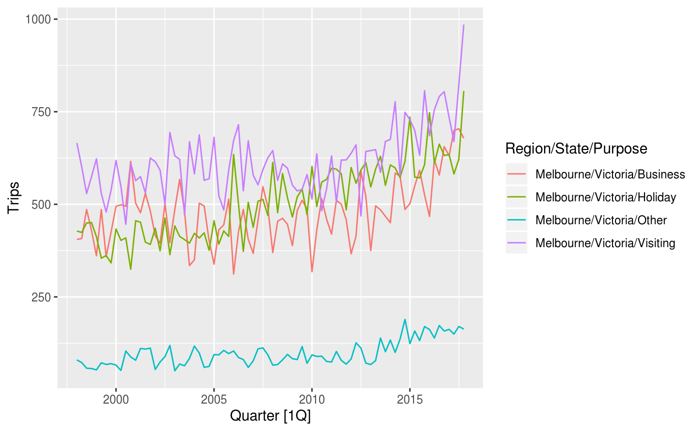
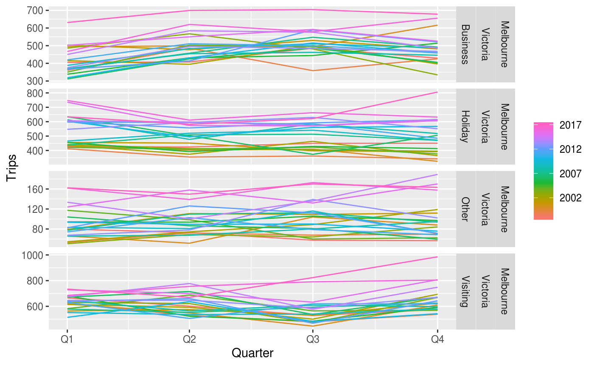
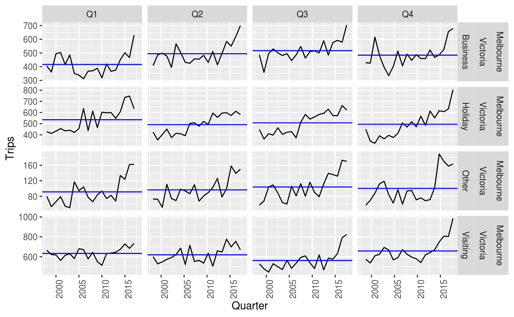
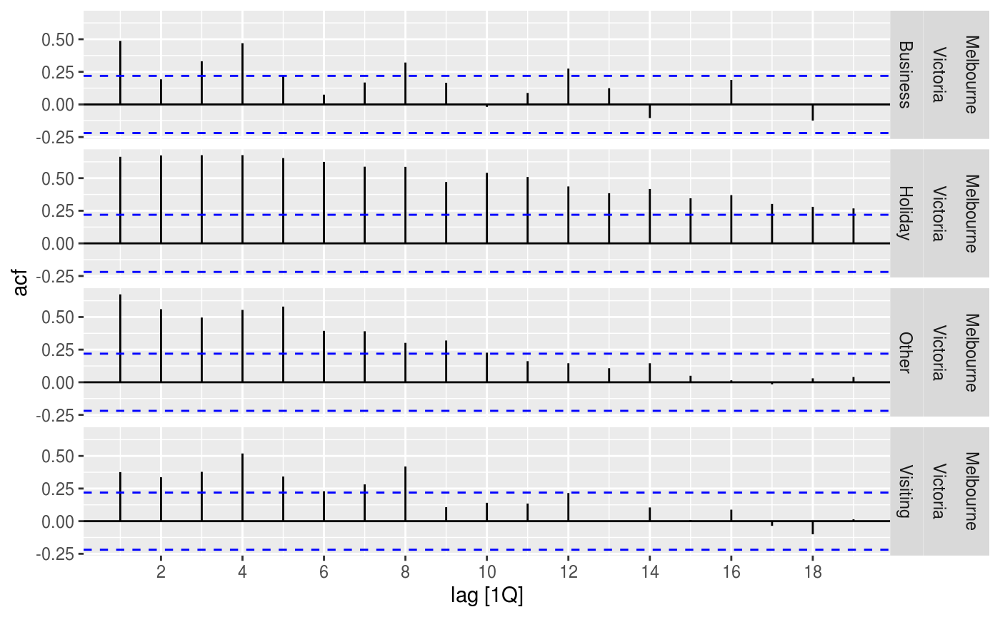
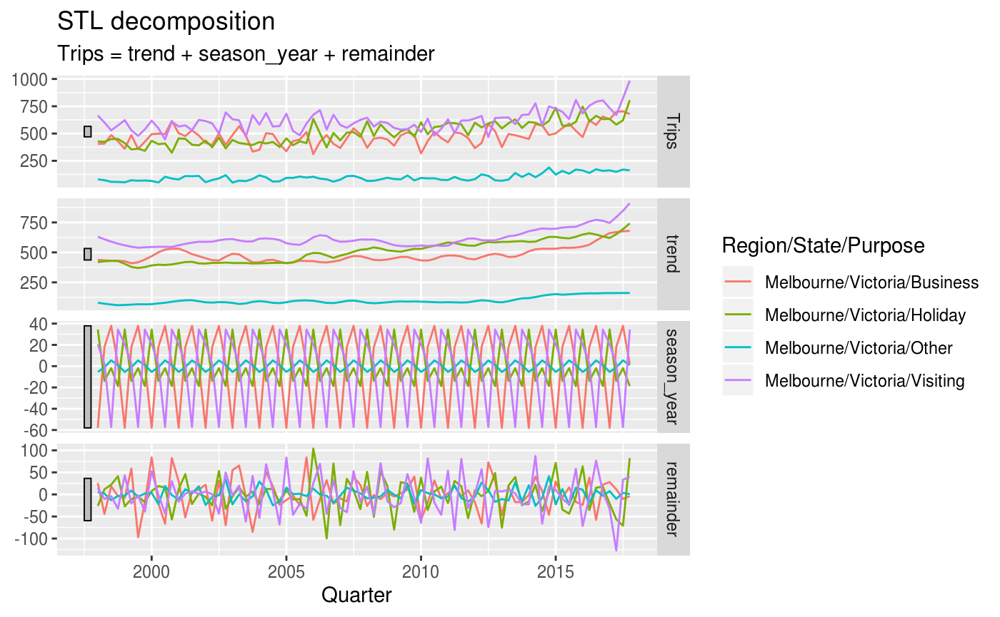
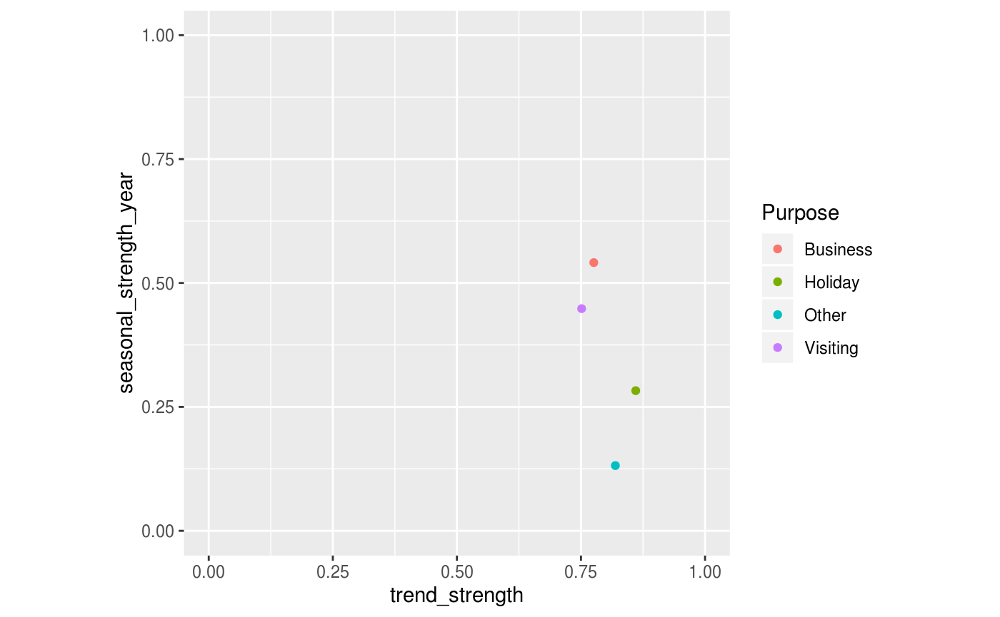

Introduction to feasts
feasts.Rmdlibrary(feasts)
#> Loading required package: fabletools
library(tsibble)
library(dplyr)
#>
#> Attaching package: 'dplyr'
#> The following object is masked from 'package:tsibble':
#>
#> id
#> The following objects are masked from 'package:stats':
#>
#> filter, lag
#> The following objects are masked from 'package:base':
#>
#> intersect, setdiff, setequal, unionThe feasts package provides a smorgasbord of tools for analysing tidy temporal data in the tsibble format. The package name is an acronym of its primary functionality: Feature Extraction and Statistics for Time Series.
Suppose we wanted to analyse seasonal patterns in the number of people travel domestically to Melbourne, Australia. In the tsibble::tourism dataset, this can be further broken down into 4 reasons of travel: “business”, “holiday”, “visiting friends and relatives” and “other reasons”. The first observation from each series are shown below.
tourism_melb <- tourism %>%
filter(Region == "Melbourne")
tourism_melb %>%
group_by(Purpose) %>%
slice(1)
#> # A tsibble: 4 x 5 [?]
#> # Key: Region, State, Purpose [4]
#> # Groups: Purpose [4]
#> Quarter Region State Purpose Trips
#> <qtr> <chr> <chr> <chr> <dbl>
#> 1 1998 Q1 Melbourne Victoria Business 405.
#> 2 1998 Q1 Melbourne Victoria Holiday 428.
#> 3 1998 Q1 Melbourne Victoria Other 79.9
#> 4 1998 Q1 Melbourne Victoria Visiting 666.A useful first look of a time series is with a standard time series plot.



tourism_melb %>%
ACF(Trips)
#> # A tsibble: 76 x 5 [1Q]
#> # Key: Region, State, Purpose [4]
#> Region State Purpose lag acf
#> <chr> <chr> <chr> <lag> <dbl>
#> 1 Melbourne Victoria Business 1Q 0.487
#> 2 Melbourne Victoria Business 2Q 0.193
#> 3 Melbourne Victoria Business 3Q 0.331
#> 4 Melbourne Victoria Business 4Q 0.470
#> 5 Melbourne Victoria Business 5Q 0.219
#> 6 Melbourne Victoria Business 6Q 0.0750
#> 7 Melbourne Victoria Business 7Q 0.168
#> 8 Melbourne Victoria Business 8Q 0.321
#> 9 Melbourne Victoria Business 9Q 0.166
#> 10 Melbourne Victoria Business 10Q -0.0183
#> # … with 66 more rows
tourism_melb %>%
STL(Trips ~ season(window = "periodic"))
#> # A dable: 320 x 9 [1Q]
#> # Key: Region, State, Purpose [4]
#> # STL Decomposition: Trips = trend + season_year + remainder
#> Region State Purpose Quarter Trips trend season_year remainder
#> <chr> <chr> <chr> <qtr> <dbl> <dbl> <dbl> <dbl>
#> 1 Melbo… Vict… Busine… 1998 Q1 405. 437. -58.0 25.8
#> 2 Melbo… Vict… Busine… 1998 Q2 408. 434. 18.1 -44.1
#> 3 Melbo… Vict… Busine… 1998 Q3 486. 430. 37.9 18.3
#> 4 Melbo… Vict… Busine… 1998 Q4 429. 431. 1.99 -3.48
#> 5 Melbo… Vict… Busine… 1999 Q1 361. 427. -58.0 -7.82
#> 6 Melbo… Vict… Busine… 1999 Q2 486. 409. 18.1 58.6
#> 7 Melbo… Vict… Busine… 1999 Q3 359. 418. 37.9 -97.0
#> 8 Melbo… Vict… Busine… 1999 Q4 426. 440. 1.99 -16.7
#> 9 Melbo… Vict… Busine… 2000 Q1 495. 468. -58.0 84.1
#> 10 Melbo… Vict… Busine… 2000 Q2 499. 501. 18.1 -19.8
#> # … with 310 more rows, and 1 more variable: season_adjust <dbl>
library(ggplot2)
tourism_melb %>%
features(Trips, feat_stl) %>%
ggplot(aes(x = trend_strength, y = seasonal_strength_year, colour = Purpose)) +
geom_point() +
coord_equal() +
lims(x = c(0,1), y = c(0,1))
library(ggplot2)
tourism_melb %>%
features(Trips, feat_stl) %>%
ggplot(aes(x = trend_strength, y = seasonal_strength_year, colour = Purpose)) +
geom_point(data = features(tourism, Trips, feat_stl), alpha = 0.3) +
geom_point() +
coord_equal() +
lims(x = c(0,1), y = c(0,1))
More information about time series analysis using the feasts package can be found in Forecasting: Principles and Practices (3rd Ed.) and in the pkgdown site.